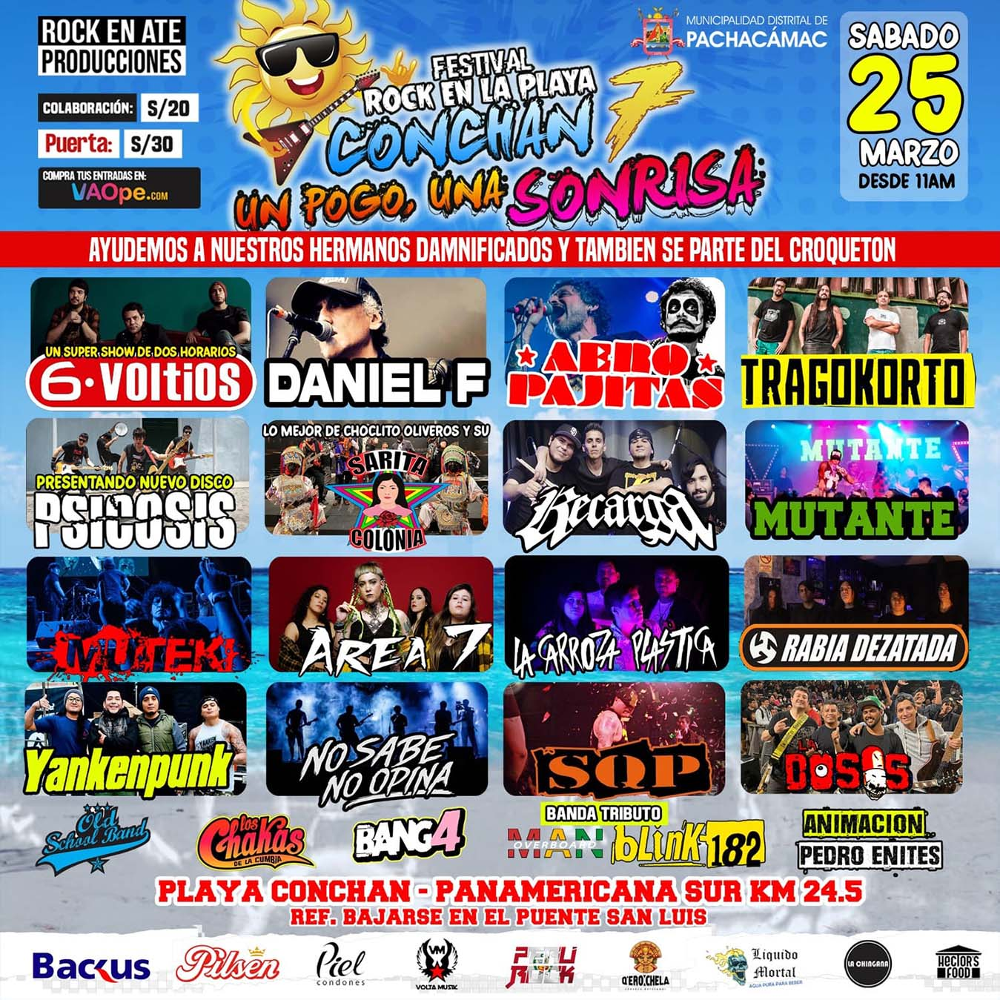
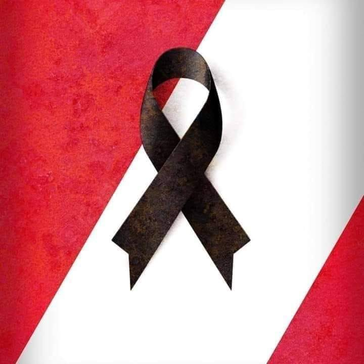

Noticias
★ Ya está disponible nuestro minidocumental ÁREA 7 " Muy pocos saben todo lo que hemos tenido que pasar "
Con 22 años de trayectoria, las niñas que empezaron como jugando a tener la banda de rock de
colegio,
pasaron a empoderar la figura femenina rockera en Perú y en países aledaños.
Esta semana, Área 7 lanzó un mini documental dirigido por el talentoso Piero García de la mano
de Raúl
Sánchez. Ambos tuvieron la difícil tarea de condensar lo que fue uno de los episodios más
difíciles en la
trayectoria de la banda.
Este trabajo audiovisual no pide permiso. Diana Foronda, voz principal y líder del grupo, es la
encargada de
relatar la etapa en que la banda es rechazada para abrir el show de “Slipknot” en el año 2016.
Brinda
detalles jamás contados de cómo ese mismo año la legendaria banda “Gun’s and Roses” elige a Área
7 para
abrir su inmenso show en el estadio monumetal.
“Tanto yo como las personas con las que toco tenemos claro que el público al que nos enfrentamos
desde el
2001 es machista. Antes tratábamos de mantener la calma quedándonos calladas porque éramos
demasiado jóvenes
para cambiar la realidad de este circuito rockero bipolar. Ahora no hay nada que perder. Quienes
se quedaron
son nuestros eternos amigos, solo confío en ellos y públicamente digo lo que pienso, sin miedo,
porque no le
puedes tener miedo a alguien que te amenaza a través de una pantalla” comenta Foronda.
Área 7 viene preparando lo que será su catálogo de nueva música y videoclips. La banda planea
empezar una
gira a nivel nacional que incluiría Ica, Arequipa, Huancayo y Huaraz.
Mira el documental:
★ Festival "Rock en Conchán" postergado debido a Huaycos en Lima - Nueva fecha 25-03-2023
Altas temperaturas, lluvias y desborde de los ríos son causados por el ciclón Yaku. Y muchas
partes del territorio peruano se han visto afectadas por este fenómeno meteorológico causando
daños, vidas humanas, vidas de nuestros pequeños animalitos, entre otros. Por ello, para
resguardar la seguridad e integridad de cada uno de ustedes, hemos optado en posponer el evento
para el día 25 de Marzo del presente año. Agradecer a todos los asistentes por su comprensión;
la venta de entradas aún están disponibles en la plataforma de #vaope y tener presentes que
muchas personas la están pasando mal en estos momentos, "es momento de ser solidarios y apoyar a
quien más lo necesite".

★ Área 7: La banda de rock integrada solo por mujeres regresa a la escena musical con nuevo single.
La falta de dinero fue el principal causante de que la banda nacional no haya presentado una
nueva canción en cinco años. “La gente no es consciente de la inversión que se necesita para
impulsar un
proyecto musical. Si nosotras mismas financiamos este lanzamiento, es porque buscamos aquella
felicidad que
solo la música nos puede ofrecer”
Resulta curioso que, a pesar de la falta de ingresos, hayamos decidido lanzar su nuevo tema, “No
han hecho
nada”, en medio de la actual crisis. Lo cierto es que el mundo no es el mismo que hace cinco
años, hoy los
artistas aprovechan las diversas plataformas de ‘streaming’ para dar a conocer su trabajo y Área
7 ha
decidido optar por ese camino. “Somos de una época de EP y discos, no de singles. Nos costó
procesar la
idea, pero creo que es una oportunidad que no podemos desaprovechar”.
La industria musical, a pesar de los notables avances, todavía cierra algunas puertas a las
artistas
mujeres, una de ellas es la oportunidad de tener mayor alcance desde el rock. “Si hiciéramos
dream pop o
folk, seguro las cosas serían más fáciles para nosotras, pero eso iría en contra de nuestra
propia
felicidad. Si el panorama actual no me promete grandes cosas, al menos ganaré experiencia y
buenos
momentos”, añade la artista peruana.
Mira nuestro videoclip:
★ Área 7: Todos los eventos de enero 2023 cancelados hasta nuevo comunicado.
Nuestro país necesita tomar conciencia de que la JUSTICIA oprime las ansias de PODER en cualquier MENTE PREPARADA PARA GOBERNAR. Hemos sido títeres toda nuestra vida. #NOMASMUERTEPERU #NOMASSANGREPERU

Conciertos
25 de marzo 2023
Lugar: Playa Conchán km 24.5 (Ref: bajarse en puente San Luis) Hora: 11 am. Entradas en: vaope.com a 20 soles